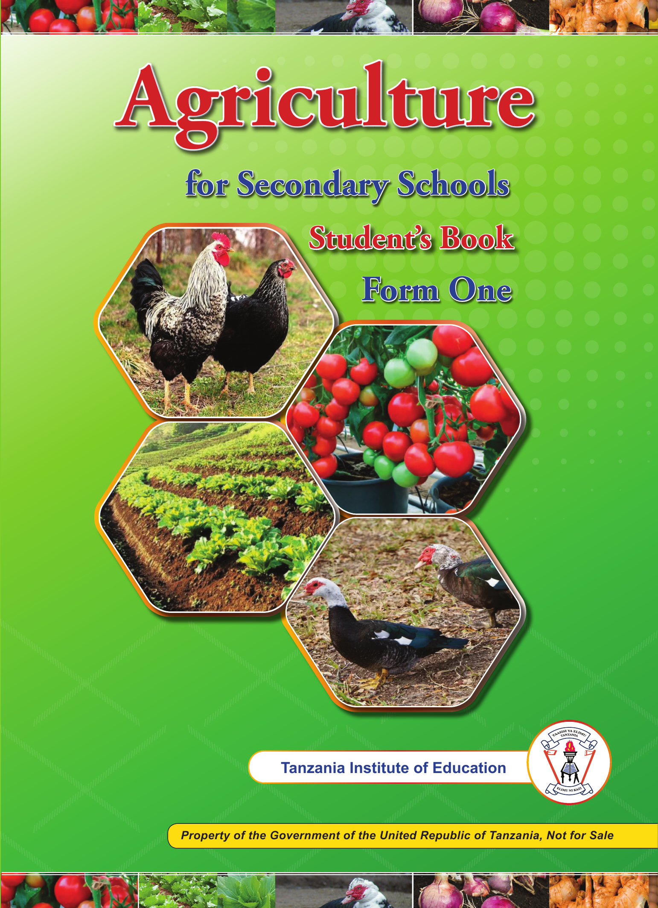

Front cover. Agriculture for Secondary Schools, Student’s Book, Form One. Tanzania Institute of Education. On a bright green background, four photographs show chickens, tomatoes on the vine, rows of leafy vegetables, and ducks. Narrow strips of photographs of vegetables and poultry run across the top and bottom. The Tanzania Institute of Education emblem appears near the bottom. Property of the Government of the United Republic of Tanzania, Not for Sale.